Prometheus 是一套开源的系统监控、报警、时间序列数据库的组合。Prometheus 基本原理是通过Http协议周期性抓取被监控组件的状态，而输出这些被监控的组件的Http接口为 Exporter。
Grafana 是一个可视化仪表盘，它拥有美观的图标和布局展示，默认支持 CloudWatch、Graphite、ES、InfluxDB、Mysql、PostgreSQL、Prometheus、OpenTSDB等作为数据源。
我们可以将 Prometheus抓取的数据，通过 Grafana 优美直观的展示出来。
Prometheus安装
prometheus下载地址：Prometheus
1 | $ cd /usr/local |
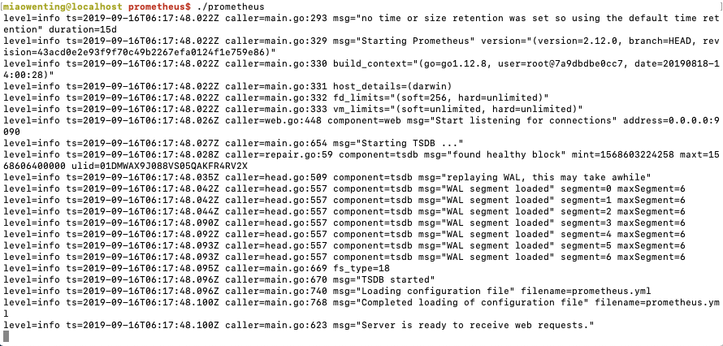
premethus启动初始界面如下：
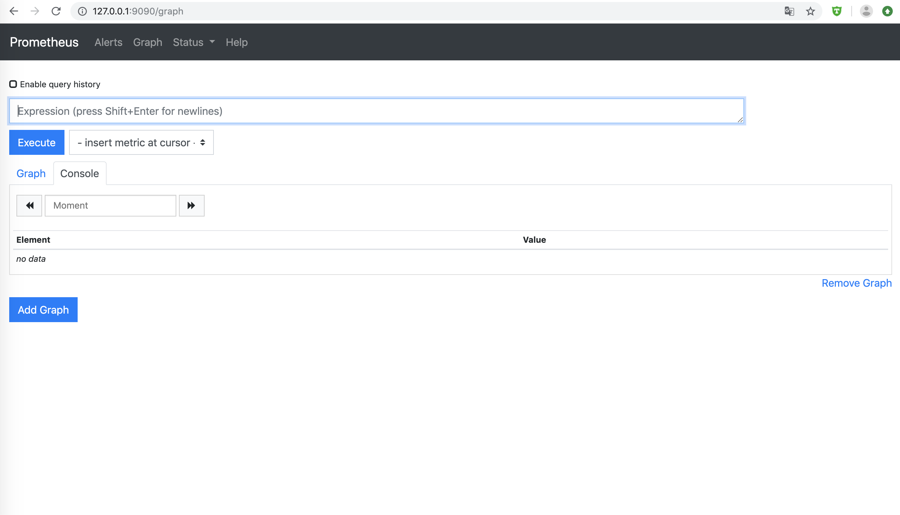
mysql-exporter
mysql-exporter下载地址: mysql-exporter
准备连接mysql的配置文件my.cnf:
1 | [client] |
1 | $ cd /usr/local/prometheus_exporter |
在/usr/local/prometheus/prometheus.yml中添加：
1 | - job_name: 'mysql' |
命令行启动mysql-exporter如下：
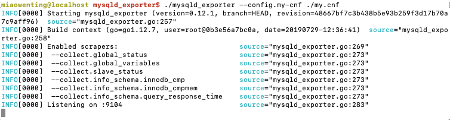
打开http://localhost:9104/metrics, 可以看到返回了mysql的瞬时metrics:
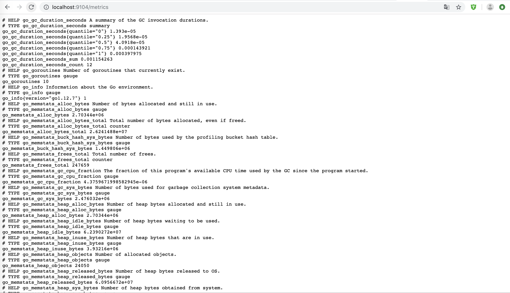
node-exporter
node-exporter下载地址： node-exporter
1 | $ cd /usr/local/prometheus_exporter |
在/usr/local/prometheus/prometheus.yml中添加：
1 | - job_name: 'node' |
命令行启动node-exporter如下：
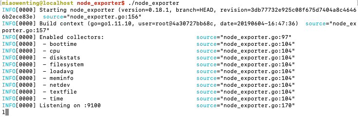
Prometheus界面搜索‘node_load1’，简单的图形化展示:
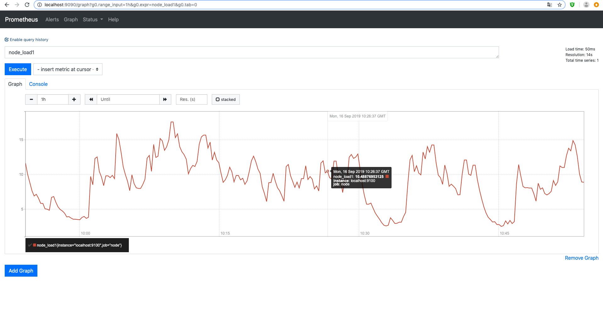
pushgateway
pushgateway下载地址：pushgateway
1 | $ cd /usr/local |
在/usr/local/prometheus/prometheus.yml中添加：
1 | - job_name: 'pushgateway' |
命令行启动pushgateway如下：
Prometheus上展示的targets如下:
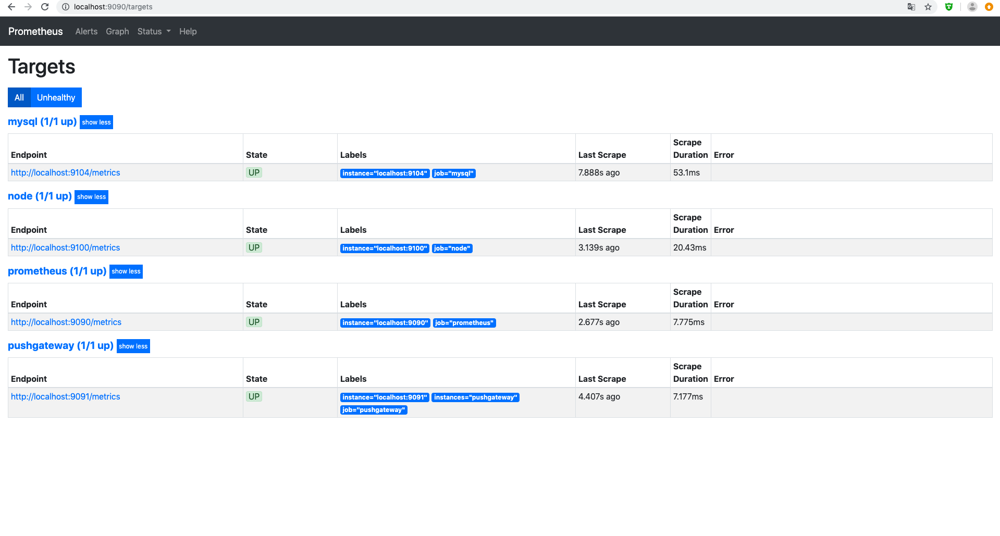
其他exporter
kafka-exporter git地址：Kafka-exporter
jmx-exporter git地址：JMX-exporter
Grafana安装
1 | $ cd /usr/local |
命令行启动grafana如下：
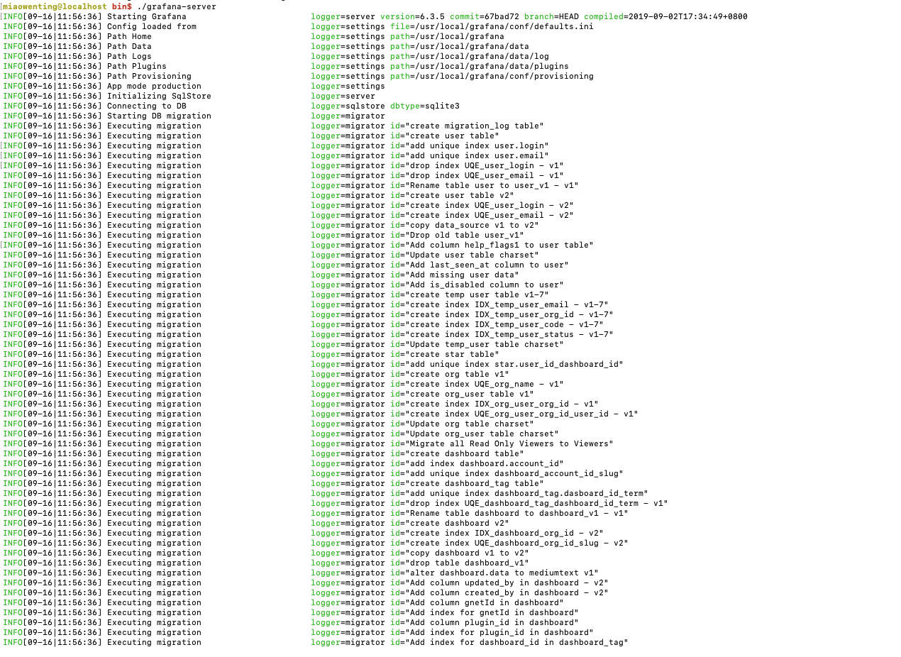
grafana启动初始界面如下：
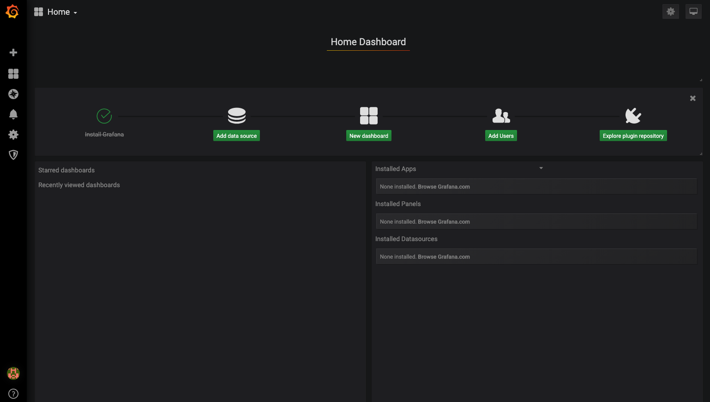
Grafana-dashboards
开源的grafana-dashboards模板：
1 | git clone https://github.com/percona/grafana-dashboards.git |
在grafana界面添加premethus数据源：
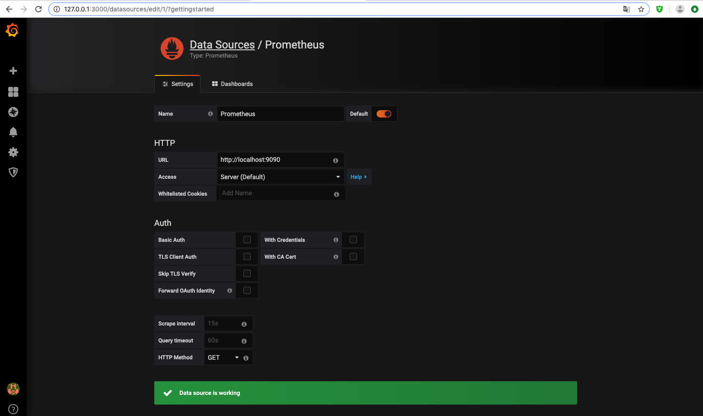
上传dashboard的开源json模板，从上方的git工程中获取：
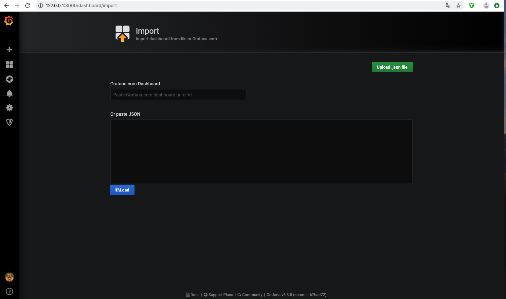
mysql监控的dashboard如下：
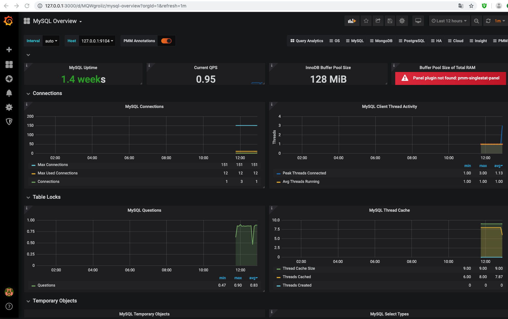
node监控的dashboard如下：
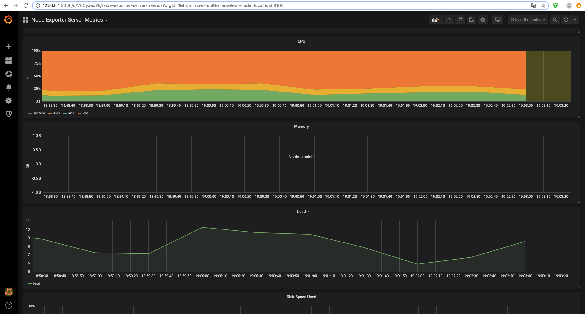
Flink metrics
1.7.2
基于flink 1.7.2版本做监控试验。
1.需要在 /usr/local/flink-1.7.2/lib 下添加 flink-metrics-prometheus_2.11-1.7.2.jar
2.修改flink配置文件: /usr/local/flink-1.7.2/conf/flink-conf.yaml：
1 | metrics.reporter.promgateway.class: org.apache.flink.metrics.prometheus.PrometheusPushGatewayReporter |
上传一个flink任务jar包：
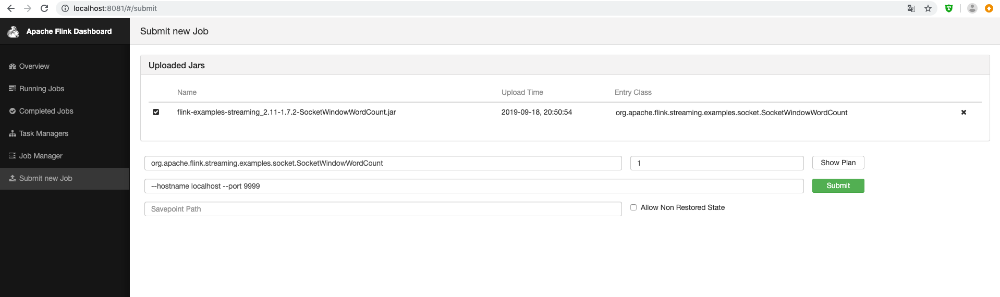
在Grafana界面上传flink metrics的模板json：Flink Metrics JSON
界面上选择指定的source、sink，即可显示出输入输出records：
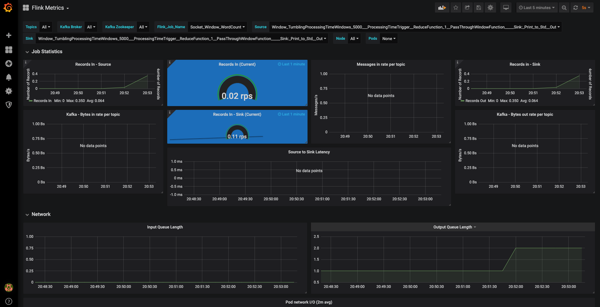
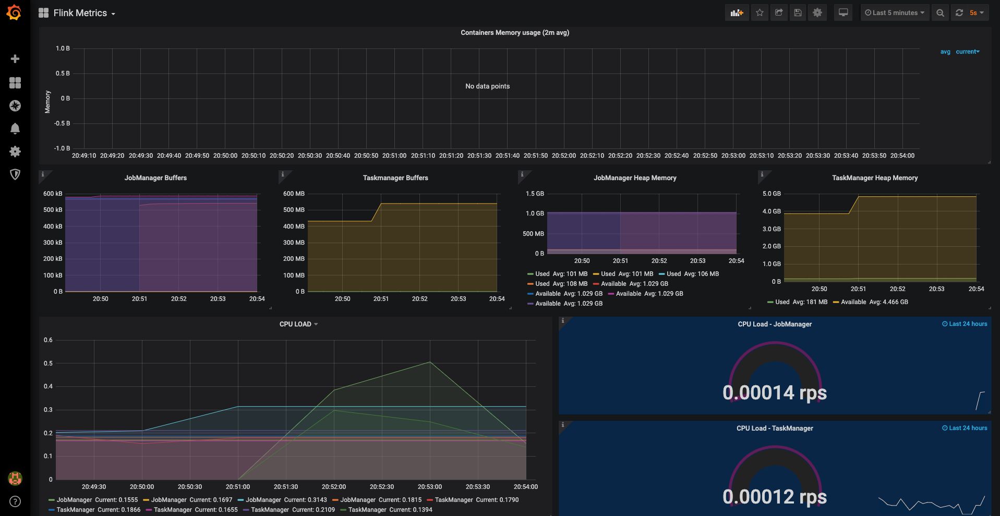
1.9.0
Grafana可以展示以下几种监控界面：
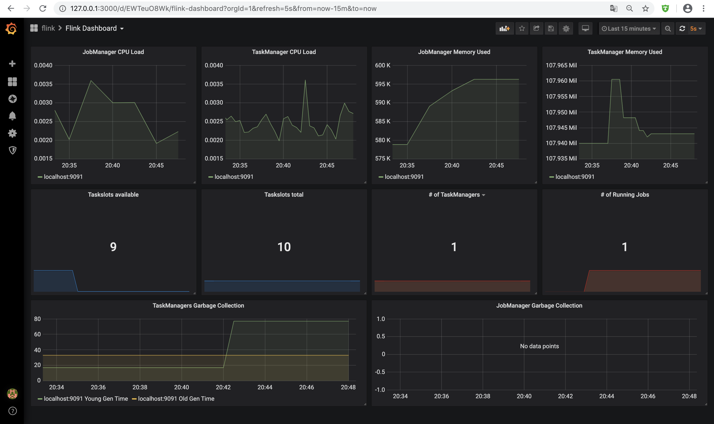
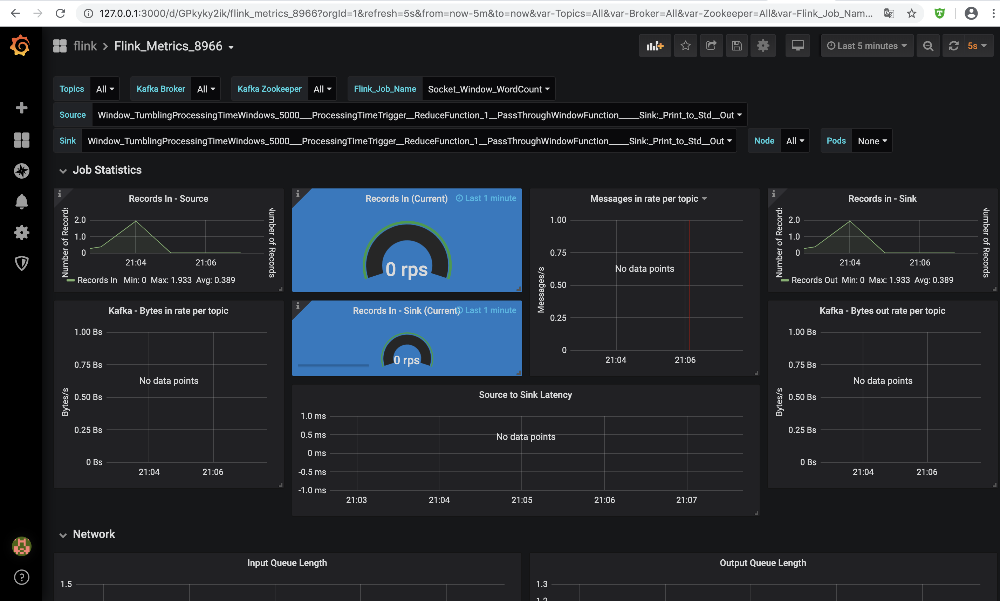
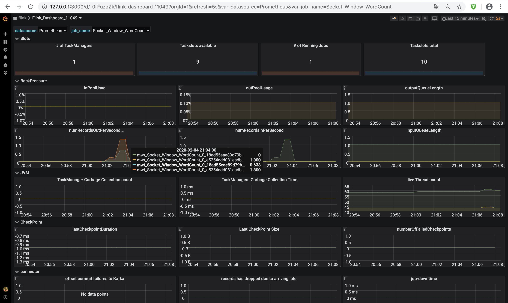